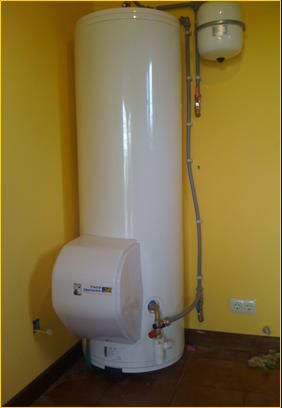
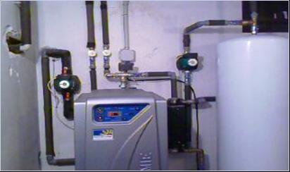

Bombas de calor para producción de agua caliente:
La solución para ahorrar energía.
Con este sistema, también podemos calentar gran cantidad de Agua Caliente Sanitaria acoplado a la bomba de calor o independientemente de esta.
Una bomba de calor para la producción de agua caliente que extrae del aire aspirado, la energía necesaria para calentar el agua y almacenarla según las necesidades, o a través de un captador enterrado, independientemente de la instalación de calefacción que dispone la vivienda. Como en el caso de la foto, con una capacidad de 300lts.
